الانتشار المداري التحليلي للكواكب العابرة المحيطة بنجمين
الملخص
يصف الإطار التحليلي المعروض هنا وصفا كاملا حركة الأنظمة المستوية التي تتكون من ثنائي نجمي وكوكب يدور حول كلا النجمين
على المقاييس الزمنية المدارية وكذلك على المقاييس الزمنية العلمانية. وتستعمل اضطرابات متجهات رونغه-لنتس لاشتقاق التطور القصير الدور في النظام، في حين تطبق
النظرية العلمانية حتى رتبة الثماني لوصف سلوكه الطويل الأمد. ويؤخذ تصحيح ما بعد نيوتني للمدار النجمي في الحسبان. يكون المدار الكوكبي دائريا ابتداء،
وتفترض النظرية المطورة هنا أن اختلاف مركز الكوكب يبقى صغيرا نسبيا ( ).
نختبر نموذجنا بمقارنته بنتائج تكاملات عددية للمعادلات الكاملة للحركة، ثم نطبقه
لدراسة التاريخ الديناميكي لبعض الأنظمة الكوكبية المحيطة بنجمين التي اكتشفها قمر كبلر التابع لناسا.
وتشير نتائجنا إلى أن تاريخ تشكل النظامين Kepler-34 وKepler-413 اختلف على الأرجح عن تاريخ
Kepler-16 وKepler-35 وKepler-38 وKepler-64، إذ إن اختلافات المركز الكوكبية المرصودة في تلك الأنظمة لا تتوافق مع فرضية المدارات الابتدائية الدائرية.
).
نختبر نموذجنا بمقارنته بنتائج تكاملات عددية للمعادلات الكاملة للحركة، ثم نطبقه
لدراسة التاريخ الديناميكي لبعض الأنظمة الكوكبية المحيطة بنجمين التي اكتشفها قمر كبلر التابع لناسا.
وتشير نتائجنا إلى أن تاريخ تشكل النظامين Kepler-34 وKepler-413 اختلف على الأرجح عن تاريخ
Kepler-16 وKepler-35 وKepler-38 وKepler-64، إذ إن اختلافات المركز الكوكبية المرصودة في تلك الأنظمة لا تتوافق مع فرضية المدارات الابتدائية الدائرية.
1 المقدمة
يمكن اختزال كثير من مسائل الفلك الديناميكي والميكانيكا السماوية إلى وصف التآثرات الثقالية في الأنظمة الثلاثية الهرمية. وتمتد الأمثلة من أنظمة الكويكبات (مثلا Liu et al., 2012) والأنظمة الكوكبية (مثلا Teyssandier et al., 2013) إلى التشكيلات متعددة النجوم (مثلا Borkovits et al., 2007)، بل حتى الأنظمة التي تضم أجساما مدمجة مثل الثقوب السوداء (مثلا Blaes et al., 2002). تتكون الثلاثيات الهرمية من نظام ثنائي وجسم ثالث على مدار أوسع. ويمكن تصور السلوك الديناميكي لمثل هذا التكوين بوصفه حركة ثنائيين: فالجسمان الداخليان (الثنائي الداخلي) يتحركان على مدار كبلري مضطرب، في حين يشكل الجسم الثالث مع مركز كتلة الثنائي الداخلي ما يسمى بالثنائي الخارجي. ويظهر كلا المدارين تطورا ديناميكيا مقترنا.
كان السلوك الديناميكي للأنظمة الهرمية، ولا سيما السلوك الطويل الأمد (العلماني)، موضوعا لدراسات مكثفة في الماضي. ويمثل كل من Brouwer (1959) وKaula (1962) وKozai (1962) وLidov (1962) وHarrington (1968) وHeppenheimer (1978) أمثلة ممتازة على ذلك. واستمر البحث في هذا الموضوع على مر السنين، وكان كل من Krymolowski & Mazeh (1999) و Ford et al. (2000) وLee & Peale (2003) وFarago & Laskar (2010) وNaoz et al. (2013a, b) وLeung & Lee (2013) وLi et al. (2014) وLiu et al. (2015) عينة صغيرة من التطورات الحديثة في هذا المجال.
إذا كان النظام المراد نمذجته مستويا، فإن التطور الديناميكي للثلاثي الهرمي تهيمن عليه التغيرات المعتمدة على الزمن في متجهات اختلاف المركز (متجهات لابلاس-رونغه-لنتس) للمدارين الداخلي والخارجي، لأن أنصاف المحاور الكبرى لا تظهر أي تطور علماني (مثلا Marchal, 1990). ومن ثم فإن حل المعادلات التفاضلية التي تحكم سلوك متجهات اختلاف المركز يتيح لنا وصف حركة النظام كله بدقة بواسطة صيغ تحليلية مغلقة.
ركزنا، في سلسلة من الأوراق، على تطور اختلاف المركز الداخلي في نظام ثلاثي هرمي. وفي Georgakarakos (2002) طورنا طريقة لقياس اختلاف المركز المحقون في المدار الداخلي بسبب اضطرابات الجسم الثالث. وقد عرفت هذه الظاهرة منذ سنوات (مثلا Mazeh & Shaham, 1979)، لكن Georgakarakos (2002) كممها تحليليا، للمرة الأولى، على المقاييس الزمنية القصيرة الأمد والعلمانية. ولما كانت تلك الحسابات قد أجريت من أجل مدارات مستوية ودائرية ابتداء، فقد وسعت لاحقا إلى الحالات التي يكون فيها الجسم المسبب للاضطراب على مدار لا مركزي (Georgakarakos, 2003) وكذلك إلى الحالات ثلاثية الأبعاد (Georgakarakos, 2004). وكان الدافع الأولي لذلك العمل مرتبطا ارتباطا وثيقا بنمذجة الاحتكاك المدي في الأنظمة الثلاثية النجمية (انظر مثلا Kiseleva et al., 1998). لذلك كانت الأنظمة المدروسة ذات كتل متقاربة. ومع ذلك اختبرت الصيغ المشتقة عدديا أيضا لنسب كتل كوكبية وبقيت صالحة (Georgakarakos, 2006). وأخيرا، قدمت تقديرات محسنة في حالة المدارات المستوية والدائرية ابتداء في Georgakarakos (2009). وقد ثبت أن الصيغ التحليلية لتطور اختلاف المركز في الثلاثيات الهرمية متعددة الاستخدامات إلى حد كبير. فقد استخدمها Chavez et al. (2012) لدراسة التضمين الطويل الأمد في منحنى ضوء المتغير الكارثي FS Aurigae، الذي كان يظن أنه يحدث بفعل الاضطراب الثقالي لجسم ثالث على مدار أوسع بكثير. وفي الآونة الأخيرة، درست حدود أنواع مختلفة من المناطق القابلة للسكنى لكوكب في ثنائي نجمي ذي مكونات من أنماط طيفية مختلفة تحليليا وعدديا (Eggl et al., 2012, 2013).
مدفوعا باكتشاف عدة كواكب محيطة بنجمين (مثلا Doyle et al., 2011; Welsh et al., 2012; Orosz et al., 2012; Schwamb et al., 2013; Kostov et al., 2014)، ازداد مؤخرا الاهتمام بالنماذج التحليلية التي تصف حركة الكواكب المحيطة بنجمين. ولكي ننشئ أدوات تحليلية أدق لخوارزميات الكشف ونظريات تشكل الكواكب، ينبغي أولا وقبل كل شيء تحسين وصفنا لتطور اختلاف المركز في الكواكب الواقعة على مدارات محيطة بنجمين (وتعرف أيضا بمدارات النمط P). وقد تحقق بعض التقدم في Georgakarakos (2009) بشأن المسألة الأخيرة، إلا أن الدراسة هناك اقتصرت على الأنظمة الثلاثية الهرمية ذات المدارات الدائرية ابتداء، وهو ما قد لا يكون كافيا في حالات معينة. فنظام Kepler-34 مثلا يضم ثنائيا نجميا باختلاف مركز قدره (Welsh et al., 2012).
نشتق في هذه الورقة تعبيرات تحليلية لاختلاف مركز جسم خفيف نسبيا يدور حول ثنائي أثقل، مثل
كوكب يتحرك حول نجم مزدوج لا مركزي. وسيتيح لنا ذلك نمذجة التطور الديناميكي لكوكب محيط بنجمين تحليليا.
وبما أن معظم الكواكب المحيطة بنجمين التي عثر عليها عبر عمليات البحث عن العبور تشترك، بدرجات متفاوتة، في المستوى المداري نفسه، فسوف
نركز على التكوينات المستوية. وعلاوة على ذلك، ندرج تصحيحا ما بعد نيوتني في نموذجنا، لأن النسبية العامة (GR) قد تؤثر، في حالات معينة، في مدار الثنائي الداخلي، مما يؤثر بدوره في تطور اختلاف المركز الكوكبي. ويفترض نموذجنا أن مدار الكوكب دائري ابتداء، ويظل صالحا للقيم الصغيرة لاختلاف مركز الكوكب ( ).
).
تنتظم بقية هذه المقالة على النحو الآتي: في القسم 2 نعرض الاشتقاق التحليلي لاختلاف مركز المدار الكوكبي، وكذلك التعبيرات الخاصة بقيمته العظمى ومتوسطه. وفي القسم 3 تقارن التقديرات التحليلية بالنتائج المستحصلة من التكامل العددي للمعادلات الكاملة للحركة. بعد ذلك نناقش أثر التصحيح ما بعد النيوتني في مسألتنا (القسم 4)، ونعرض الصيغ الخاصة بالانتشار التحليلي للنظام الثلاثي الهرمي (القسم 5). وفي القسم 6 نطبق تقديراتنا التحليلية على ستة أنظمة كوكبية محيطة بنجمين اكتشفت خلال مهمة كبلر. وأخيرا، نناقش نتائجنا ونلخصها في القسم 8. ويمكن العثور على وصف موجز للمتغيرات المستخدمة في هذا العمل في قسم الترميز بعد الملحق.
2 النظرية
نحن معنيون بإيجاد وصف كامل لمتجهات اختلاف المركز للمدارين الداخلي والخارجي، لأن هذه المتجهات ستحدد التطور الديناميكي لنظام ثلاثي هرمي مستو. وكما ذكر سابقا، سنفترض تكوينا مؤلفا من نجم-نجم-كوكب، حيث تعامل جميع الأجسام بوصفها كتلا نقطية. وبما أن الجسم الخارجي بحجم كوكبي، يمكننا إهمال تأثيره في سعة اختلاف المركز المداري للزوج الداخلي (وسيبرر ذلك في القسم 3). ولن تؤخذ في الحسبان إلا التغيرات في اتجاه متجه اختلاف المركز للمدار الداخلي.
لقد عرضت الطريقة العامة لاشتقاق تقديرات دقيقة لاختلاف المركز تحتوي على مساهمات دورية طويلة وقصيرة في Georgakarakos (2003). أولا، يدرس التطور الطويل الأمد لمتجه اختلاف المركز (متجه لابلاس-رونغه-لنتس) باشتقاق معادلات حركة موسَّطة على جميع الزوايا السريعة وحلها. وتزيل عملية التوسيط، عبر تحويل قانوني، جميع الحدود القصيرة الدور في تطور اختلاف المركز، بحيث لا تظهر في الحل النهائي. وإذا أردنا وصف سلوك النظام على المقاييس الزمنية المدارية أيضا، أمكننا إعادة إدخال الحدود القصيرة الدور باشتقاق المعادلات غير الموسطة لمتجه اختلاف المركز. ثم نحذف جميع المركبات التي ترد أصلا في الحل الطويل الأمد (العلماني)، ونحل المعادلات التفاضلية المختزلة. والحل النهائي هو تراكب للحلين القصير والطويل الدور لمتجه اختلاف المركز.
وقد اختير هذا النهج في هذا العمل. فقد بنيت الحلول العلمانية لمتجه اختلاف المركز الخارجي من معادلات الحركة المشتقة من الهاملتونيين الموافقين بعد توسيطهما قانونيا. أما الحدود القصيرة الدور فقد كان لا بد من تقسيمها هي نفسها إلى مركبات متوسطة الأمد (بفترات من رتبة فترة المدار الكوكبي) وقصيرة الأمد (بفترات من رتبة فترة المدار النجمي) بغية إتاحة حل تحليلي. وتؤدي إعادة ضم المساهمات المختلفة للحلول الطويلة والمتوسطة والقصيرة الأمد إلى النتيجة النهائية كما يرد تفصيله في الأقسام التالية.
2.1 حساب التطور الطويل الأمد
لاشتقاق التضمين الطويل الأمد للنظام، سنستخدم الصياغة الهاملتونية (Marchal, 1990). ولهذا الغرض نستعمل متغيرات ديلوناي، وهي مجموعة من المتغيرات القانونية. وبالنسبة إلى نظام ثلاثي الأجسام مستو، تعرف هذه المتغيرات كما يأتي:
| (1) |
حيث إن و و و هي، على الترتيب، أنصاف المحاور الكبرى، واختلافات المركز، وخطوط طول الحضيض، والشذوذات المتوسطة للمدارين الداخلي () والخارجي (). وعلاوة على ذلك،
هي ما يسمى بالكتل المختزلة، حيث و هما كتلتا الثنائي النجمي والكوكب على الترتيب. والكتلة الكلية للنظام هي .
وباستخدام هذه المتغيرات، يكتب الهاملتوني لنظام ثلاثي هرمي على الصورة
هما كتلتا الثنائي النجمي والكوكب على الترتيب. والكتلة الكلية للنظام هي .
وباستخدام هذه المتغيرات، يكتب الهاملتوني لنظام ثلاثي هرمي على الصورة
| (2) |
حيث
| (3) |
هي الطاقة الكبلرية للمدار الداخلي،
| (4) |
هي الطاقة الكبلرية للمدار الخارجي، و
| (5) |
هو الهاملتوني الاضطرابي، حيث إن و هما المسافتان بين و وبين و
وبين و على الترتيب.
وعلاوة على ذلك، فإن R هو المتجه الذي يصل مركز كتلة الثنائي الداخلي بالجسم الثالث، في حين سيشير r إلى متجه الموضع النسبي للمدار الداخلي (انظر الشكل 1). وأخيرا، فإن هو ثابت الجذب العام.
على الترتيب.
وعلاوة على ذلك، فإن R هو المتجه الذي يصل مركز كتلة الثنائي الداخلي بالجسم الثالث، في حين سيشير r إلى متجه الموضع النسبي للمدار الداخلي (انظر الشكل 1). وأخيرا، فإن هو ثابت الجذب العام.
وبما أننا نتعامل مع نظام هرمي وأن  صغير، فإن
يمكن التعبير عنه بدلالة كثيرات حدود ليجندر، فنحصل على:
صغير، فإن
يمكن التعبير عنه بدلالة كثيرات حدود ليجندر، فنحصل على:
| (6) |
حيث إن و هما كثيرا حدود ليجندر، و ، كما يظهر في الشكل 1، هي الزاوية بين
المتجهين r وR.
، كما يظهر في الشكل 1، هي الزاوية بين
المتجهين r وR.
يمكن الحصول على السلوك الطويل الأمد للنظام عندما تزال الآثار القصيرة الدور في الهاملتوني باستخدام طريقة فون تسايبل (مثلا Marchal, 1990). وتستعمل هذه الطريقة تحويلا قانونيا، ويمكن العثور على تفاصيل الاشتقاق في مواضع أخرى (Brouwer, 1959; Marchal, 1990; Krymolowski & Mazeh, 1999). وتمتاز طريقة تحويل فون تسايبل مقارنة بطرائق التوسيط الأخرى، مثل ”طريقة المقص” مثلا، بأنها تنتج هاملتونيا من الرتبة الثانية بالنسبة إلى الكتل (على الرغم من أن هذا الحد لن يستخدم هنا لأن أثره مهمل بسبب كون الجسم الثالث ذا كتلة كوكبية)، وبأنه كامل بالنسبة إلى اختلافات المركز. ومن ثم فإن الهاملتوني للمدارات المستوية بعد توسيطه على الشذوذين المتوسطين الداخلي والخارجي هو
| (7) |
مع
| (8) |
حيث يشير الدليل إلى التطور الطويل الأمد (العلماني)، وتنشأ و من كثيري حدود ليجندر و على الترتيب.
وباستخدام متغيرات ديلوناي، تتخذ معادلات هاملتون الشكل الآتي لنظام مستو:
| (9) |
وبما أن الهاملتوني لدينا مستقل عن ، فإن جميع ثابتة. وهذه نتيجة معروفة جيدا للمسألة الموسطة (مثلا Harrington, 1968). ثم، مع تذكر أن اختلاف مركز المدار النجمي يبقى غير متغير بسبب كون الجسم الخارجي ذا كتلة كوكبية، تكون معادلات الحركة ذات الصلة:
| (10) | |||||
| (11) | |||||
| (12) | |||||
إذا استبدلنا متغيرات ديلوناي في المعادلات (1) بالعناصر المدارية المقابلة، واستخدمنا و، يصبح النظام أعلاه:
| (13) | |||||
| (14) | |||||
| (15) | |||||
وبما أن المدار الكوكبي دائري ابتداء ويتوقع أن يبقى اختلاف مركزه صغيرا، فإننا نهمل حدود الرتبة في المعادلات أعلاه، ونحتفظ أيضا بالحد المسيطر في معادلة الحضيض النجمي. ونتيجة لذلك تتخذ معادلات الحركة الشكل الآتي:
| (16) | |||||
| (17) | |||||
| (18) |
حيث
| (19) |
ثوابت.
يمكن حل نظام المعادلات التفاضلية أعلاه تحليليا، والحل هو
| (20) |
للمدار الكوكبي، حيث إن و ثابتا تكامل. أما للمدار النجمي فنحصل على
| (21) |
حيث افترضنا، من دون فقدان للعمومية، أن خط طول الحضيض الابتدائي للمدار الداخلي يساوي صفرا. وبناء على ذلك تصبح مركبات متجه اختلاف المركز للمدار النجمي
| (22) |
2.2 حساب التطور القصير والمتوسط الأمد
بعد أن أصبح الحل الطويل الأمد لتطور اختلاف المركز في نظامنا متاحا لنا، نمضي الآن لاشتقاق معادلات الحدود المتوسطة والقصيرة الدور. ومرة أخرى، نستخدم تفكيك ياكوبي لمسألة الأجسام الثلاثة لوصف حركة النظام (انظر الشكل 1). وفي هذا السياق تكون معادلة حركة الجسم الخارجي:
| (23) |
مع
ومرة أخرى، بما أننا نتعامل مع نظام ثلاثي هرمي، وبما أن الجسم الثالث يفترض أن يكون على مسافة كبيرة من الثنائي الداخلي، وهو ما يعني أن صغير، فإن معكوسات المسافات في المعادلة (23) يمكن التعبير عنها بدلالة كثيرات حدود ليجندر كما يأتي:
| (24) | |||||
| and | |||||
| (25) |
وبالتوسع إلى الرتبة الثانية وإجراء الاستبدال
تصبح معادلة حركة الثنائي الخارجي
| (26) |
وباستخدام متجه رونغه-لنتس للمدار الخارجي، يمكننا الحصول على تعبير لاختلاف المركز. ومن ثم:
| (27) |
حيث .
وبتعويض المعادلة (23) في المعادلة (2.2)، وافتراض أن اختلاف المركز يبقى صغيرا (ومن ثم إهمال الحد )، نحصل على:
| (28) |
حيث يشير الدليلان  و
و إلى الحدود القصيرة والمتوسطة الدور كما أوضحنا سابقا.
إلى الحدود القصيرة والمتوسطة الدور كما أوضحنا سابقا.
والآن يمكن تمثيل متجهات ياكوبي
على الصورة
و، حيث إن  و
و و هي نصف المحور الأكبر
واختلاف المركز والشذوذ اللامركزي للمدار الداخلي، في حين أن و هما نصف المحور الأكبر والشذوذ المتوسط
للمدار الخارجي على الترتيب.
وبالتعويض عن r وR في المعادلة (28)، نحصل على معدل تغير مركبتي متجه اختلاف المركز الخارجي:
و هي نصف المحور الأكبر
واختلاف المركز والشذوذ اللامركزي للمدار الداخلي، في حين أن و هما نصف المحور الأكبر والشذوذ المتوسط
للمدار الخارجي على الترتيب.
وبالتعويض عن r وR في المعادلة (28)، نحصل على معدل تغير مركبتي متجه اختلاف المركز الخارجي:
| (29) |
حيث إن X هي نسبة الفترتين للمدارين.
وباستخدام المعادلات (29)، نستطيع الآن الحصول على الحدود القصيرة الدور لتطور متجه اختلاف المركز الكوكبي. وسيتم ذلك في خطوتين. أولا، نوسط المعادلات أعلاه على الحركة السريعة، ثم نكامل بالنسبة إلى الزمن:
| (30) |
هنا، و هما ثابتا تكامل. وفي خطوة ثانية نضيف حدودا أعلى ترددا بتكامل المعادلات (29) بالنسبة إلى الزمن. وأثناء هذه العملية، تزال أي حدود تظهر وقد أخذت في الحسبان سابقا (وتعطيها المعادلات (30)). ويعطي التكامل بالأجزاء حلا على صورة متسلسلة قوى بدلالة . وبالاحتفاظ بالحد الأكبر في تلك المتسلسلة، ننتهي أخيرا إلى المعادلات القصيرة الأمد الآتية لمتجه اختلاف المركز في المدار الكوكبي:
| (31) |
مع كون و معطيين في الملحق. وبالجمع بين المعادلتين (30) و(31)، نجد صيغا لجميع المساهمات غير العلمانية:
| (32) |
نود أن نشير هنا إلى أن و و
و عوملت كثوابت في الحسابات أعلاه.
عوملت كثوابت في الحسابات أعلاه.
2.3 الحل الكامل لاختلافات المركز
يمكننا الآن أن نجمع المعادلتين (20) و(32) من أجل الحصول على الحل الكلي لاختلاف المركز الخارجي. وكما في حالة اختلاف المركز الداخلي، يتم ذلك باستبدال ثوابت التكامل في الحل القصير الدور بتعبيرات التطور العلماني:
| (33) |
وتحدد الثوابت في المعادلة (33) من حقيقة أننا نفترض أن اختلاف المركز الخارجي يساوي صفرا ابتداء، أي
| (34) |
وهو ما يؤدي في النهاية إلى
| (35) |
حيث
| (36) | |||||
| (37) | |||||
وقد عرفت الكميات في المعادلات (19)، و هو الشذوذ المتوسط الابتدائي للكوكب. ويعطى تطور اختلاف المركز للمدار الداخلي بالمعادلات (22).
2.4 القيمة العظمى ومتوسط مربع اختلاف المركز الخارجي
يمكننا أيضا الحصول على تقدير للقيمة العظمى التي يقدر لاختلاف المركز الخارجي أن يبلغها أثناء تطوره، بافتراض أنه كان صفريا ابتداء. ويتحقق ذلك بإجراء بعض المعالجات الجبرية وتعظيم الدوال المثلثية في المعادلتين (20) و(32). وفي النهاية نحصل على:
| (38) |
وبتوسيط المعادلات (35) على الزمن، نحصل على التعبير الآتي (مع استبعاد الحدود القصيرة الدور):
| (39) | |||||
إذا وسطت المعادلات (35) على الزمن والزوايا الابتدائية معا، نجد التعبير الأكثر اختصارا لمتوسط مربع اختلاف المركز الخارجي:
| (40) | |||||
3 الاختبار العددي
من أجل اختبار صلاحية تقديراتنا التحليلية، قمنا بتكامل المعادلات الكاملة للحركة عدديا. ولهذا الغرض استخدمنا المكامل السيمبلكتيكي ذي تحويل الزمن الذي طوره Mikkola (1997)، وهو مصمم خصيصا لتكامل الأنظمة الثلاثية الهرمية. ويستخدم الرمز إحداثيات ياكوبي القياسية، أي إنه يحسب متجهات الموضع والسرعة النسبية للمدارين الداخلي والخارجي عند كل خطوة زمنية. واستخدمت هذه المتجهات لتوليد العناصر المدارية للمدارين النجمي والكوكبي.
درسنا أنظمة ذات تسع توليفات كتلية مختلفة. واختيرت الكتل النجمية بحيث تكون . أما الكتل الكوكبية التي استخدمناها فكانت بحيث ، أي إننا اخترنا مرافقات شبيهة بالأرض وبالمشتري وبالأقزام البنية. وتراوح اختلاف المركز من 0 إلى 0.9، في حين كان مجال نصف المحور الأكبر بين مرة واحدة و12 مرات نصف المحور الأكبر الحرج كما أعطي في Holman & Wiegert (1999)، الذين درسوا استقرار المدارات الكوكبية في أنظمة النجوم الثنائية بإجراء محاكاة عددية ضمن إطار مسألة الأجسام الثلاثة المقيدة الإهليلجية المستوية. فإذا بقي جسيم طوال زمن التكامل كله عند جميع خطوط الطول الابتدائية، صنف النظام على أنه مستقر. وبالنسبة إلى المدارات المحيطة بنجمين، وباستخدام ملاءمة بالمربعات الصغرى لبياناتهم، حصلوا على تعبير لنصف المحور الأكبر الكوكبي الحرج ، أي أصغر نصف محور أكبر كوكبي تكون عنده الجسيمات مستقرة في جميع المواضع الابتدائية، ويعطى بـ(باستخدام ترميزنا لمعاملات الكتلة والعناصر المدارية):
| (41) | |||||
وأخيرا، غير الشذوذ اللامركزي النجمي الابتدائي والشذوذ المتوسط الكوكبي الابتدائي من  إلى
بخطوة مقدارها
إلى
بخطوة مقدارها  . وقورنت نتائج المحاكاة العددية بتقديراتنا التحليلية لكل من
و، أي المعادلتين (38) و(40)، على المقياسين الزمنيين القصير والعلماني. وفي محاكاة المقياس الزمني القصير
كان زمن التكامل فترة مدارية كوكبية واحدة، في حين ضبط زمن التكامل في المحاكاة الطويلة
الأمد على ، وهو التقدير التحليلي
للفترة العلمانية لاختلاف المركز الكوكبي.
. وقورنت نتائج المحاكاة العددية بتقديراتنا التحليلية لكل من
و، أي المعادلتين (38) و(40)، على المقياسين الزمنيين القصير والعلماني. وفي محاكاة المقياس الزمني القصير
كان زمن التكامل فترة مدارية كوكبية واحدة، في حين ضبط زمن التكامل في المحاكاة الطويلة
الأمد على ، وهو التقدير التحليلي
للفترة العلمانية لاختلاف المركز الكوكبي.
عموما، كانت تقديراتنا التحليلية في توافق جيد مع النتائج المتحصلة من المحاكاة العددية. وكما هو متوقع، ظهرت أكبر الأخطاء في الأنظمة التي بدأ فيها الكوكب عند نصف المحور الأكبر الحرج. وكلما ابتعدنا عن نصف المحور الأكبر الحرج، تناقص الخطأ بسرعة. وتعرض الأشكال 2-5 أهم النتائج العددية ذات الصلة. وأخيرا، يمثل الشكل 6 مثالا يبين صلاحية افتراضنا بأن أنصاف المحاور الكبرى واختلاف المركز النجمي تبقى ثابتة.
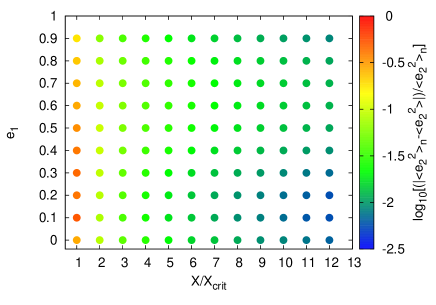
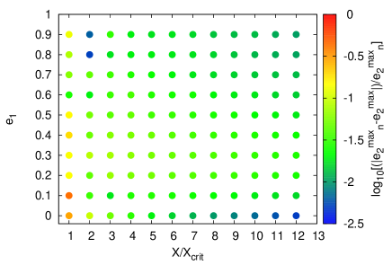
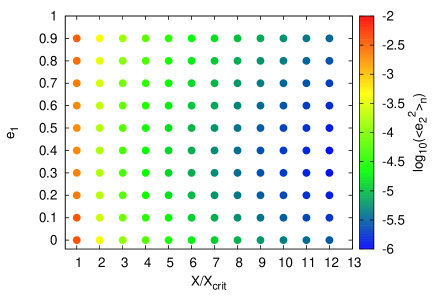
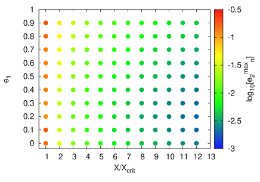
 ، و
، و هي نسبة الفترتين الابتدائية، و
هي نسبة الفترتين الابتدائية، و هي نسبة الفترتين الحرجة المستندة إلى Holman & Wiegert (1999). زمن التكامل هو فترة مدارية كوكبية واحدة.
هي نسبة الفترتين الحرجة المستندة إلى Holman & Wiegert (1999). زمن التكامل هو فترة مدارية كوكبية واحدة.
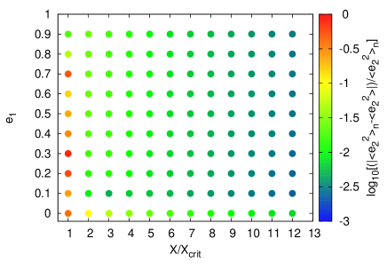
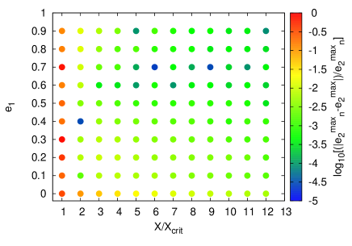
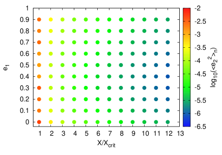
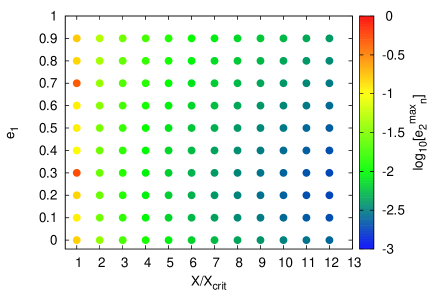
 هي نسبة الفترتين الابتدائية، و
هي نسبة الفترتين الابتدائية، و هي نسبة الفترتين الحرجة المستندة إلى Holman & Wiegert (1999). زمن التكامل هو فترة علمانية تحليلية واحدة.
هي نسبة الفترتين الحرجة المستندة إلى Holman & Wiegert (1999). زمن التكامل هو فترة علمانية تحليلية واحدة.
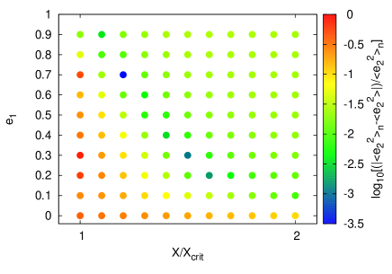
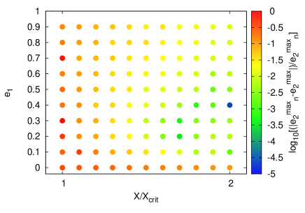
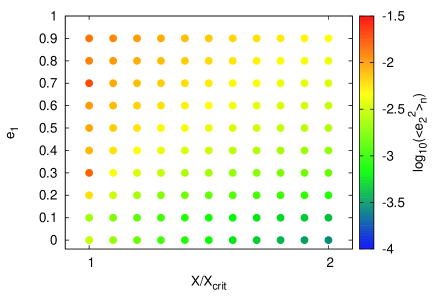
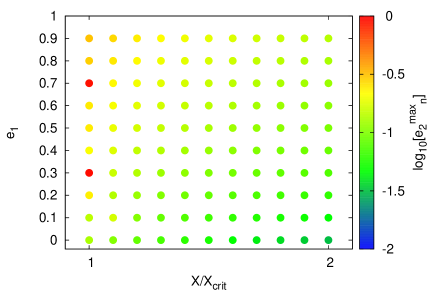
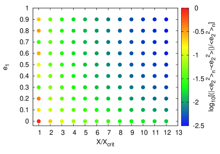
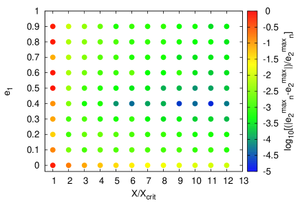
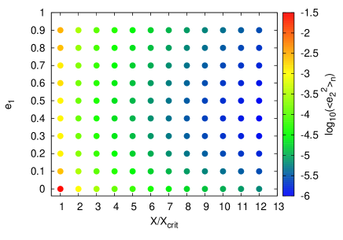
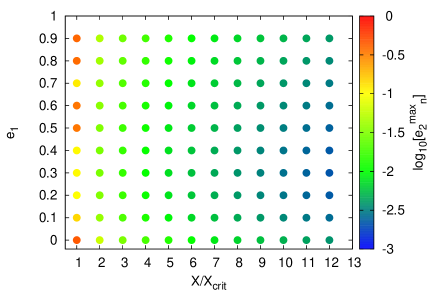
 و، و
و، و هي نسبة الفترتين الابتدائية، و هي نسبة الفترتين الحرجة المستندة إلى Holman & Wiegert (1999). زمن التكامل هو فترة علمانية تحليلية واحدة.
هي نسبة الفترتين الابتدائية، و هي نسبة الفترتين الحرجة المستندة إلى Holman & Wiegert (1999). زمن التكامل هو فترة علمانية تحليلية واحدة.
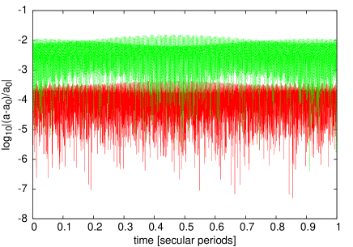
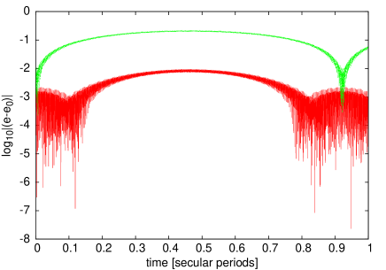
 ، والشذوذ المتوسط الكوكبي الابتدائي هو ،
ونسبة الفترتين الابتدائية هي ، وزمن التكامل هو فترة علمانية تحليلية واحدة.
تبقى التغيرات في
اختلاف المركز الكوكبي هي المسيطرة حتى في الأنظمة القريبة من نسبة الفترتين الحرجة لعدم الاستقرار الديناميكي.
، والشذوذ المتوسط الكوكبي الابتدائي هو ،
ونسبة الفترتين الابتدائية هي ، وزمن التكامل هو فترة علمانية تحليلية واحدة.
تبقى التغيرات في
اختلاف المركز الكوكبي هي المسيطرة حتى في الأنظمة القريبة من نسبة الفترتين الحرجة لعدم الاستقرار الديناميكي.
4 التصحيح ما بعد النيوتني
في بعض الثنائيات النجمية، يمكن أن يكون الحقل الثقالي بين النجمين قويا بما يكفي لجعل إدراج النسبية العامة ضروريا من أجل وصف حركة النظام وصفا صحيحا. وفي مثل هذه الحالات، يمكن تعديل نظريتنا بسهولة لمراعاة الاضطراب الإضافي. فكل ما يلزم هو إضافة التصحيح ما بعد النيوتني من الرتبة الأولى الآتي للمدار النجمي إلى المعادلة (2) (مثلا Naoz et al., 2013b):
| (42) |
حيث إن p وp هما الزخم الخطي ومقداره على الترتيب، و هي سرعة الضوء في الخلاء.
وبتوسيط الهاملتوني أعلاه على الحركة السريعة، نحصل على (Naoz et al., 2013b):
هي سرعة الضوء في الخلاء.
وبتوسيط الهاملتوني أعلاه على الحركة السريعة، نحصل على (Naoz et al., 2013b):
 |
(43) |
وهو ما يؤدي في النهاية إلى الحد الإضافي الآتي:
| (44) |
يمكن ببساطة إضافة الحد أعلاه إلى المعادلة (15). ومن ثم يكون لدينا
| (45) |
وبالتالي
| (46) |
حيث
 |
(47) |
يرد مثال على أثر التصحيح ما بعد النيوتني (PN) في الشكل 7.
هنا، قمنا بتكامل معادلات أينشتاين-إنفلد-هوفمان عدديا باستخدام مخطط غاوس-رادو (Eggl & Dvorak, 2010)
لنظام ذي و و و
و و au و
au و و و و
و و و .
كانت نسبة الفترتين الابتدائية للنظام أعلاه X=200، مما يعطي نصف محور أكبر كوكبي au.
ويبين الرسم أن إدراج النسبية العامة في نمذجة حركة الثنائي النجمي
يمكن أن يكون له أثر مهم في تطور اختلاف المركز الكوكبي.
.
كانت نسبة الفترتين الابتدائية للنظام أعلاه X=200، مما يعطي نصف محور أكبر كوكبي au.
ويبين الرسم أن إدراج النسبية العامة في نمذجة حركة الثنائي النجمي
يمكن أن يكون له أثر مهم في تطور اختلاف المركز الكوكبي.
يمكن تطبيق التصحيح ما بعد النيوتني على تقديراتنا التحليلية بمجرد استبدال بـ، مثلا في المعادلتين (35) و(38) - (40).
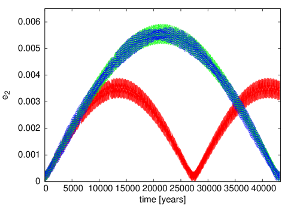
 و و
و و و au و
و au و au و و و
au و و و و. يأتي المنحنى الأحمر من تكامل المعادلات الكاملة غير النسبية للحركة، ويأتي المنحنى الأخضر من تكامل المعادلات الكاملة النسبية للحركة، أما المنحنى الأزرق فهو تقديرنا التحليلي.
و. يأتي المنحنى الأحمر من تكامل المعادلات الكاملة غير النسبية للحركة، ويأتي المنحنى الأخضر من تكامل المعادلات الكاملة النسبية للحركة، أما المنحنى الأزرق فهو تقديرنا التحليلي.5 الوصف التحليلي لتطور النظام
نبين في هذا القسم كيف يمكن استخدام المعادلات (22) و(35) و(46) لوصف التطور الزمني للنظام بأكمله، أي الثنائي والكوكب. بالنسبة إلى المدار الداخلي لدينا
| (48) | |||||
| (49) | |||||
| (50) | |||||
| (51) |
حيث يرمز  إلى الشذوذ الحقيقي المقابل.
وقد افترضنا هنا أن . ويترتب على الحركة المتوسطة أن .
وبتعريف بوصفها مصفوفة دوران 2D
البسيطة
إلى الشذوذ الحقيقي المقابل.
وقد افترضنا هنا أن . ويترتب على الحركة المتوسطة أن .
وبتعريف بوصفها مصفوفة دوران 2D
البسيطة
| (52) |
نجد أن حل المتجه النسبي للنجمين في الثنائي، ، هو
| (53) |
ولإيجاد متجه موضع الكوكب، نتبع الإجراء نفسه، غير أن طول متجه اختلاف المركز لم يعد ثابتا مع الزمن ولدينا
| (54) | |||||
| (55) | |||||
| (56) | |||||
| (57) | |||||
| (58) |
حيث . وهنا يجب أخذ القيم المقابلة لـ من المعادلات (35). ثم يعطى المتجه النسبي من مركز كتلة النجم الثنائي إلى الكوكب بـ
| (59) |
ومرة أخرى، افترضنا أن . نود أن نشير هنا إلى أن الشذوذ اللامركزي لأي من المدارين يمكن حسابه بحل معادلة كبلر . وبدلا من ذلك يمكن استخدام توسع متسلسل يربط الشذوذ المتوسط بالشذوذ الحقيقي، كما في (انظر مثلا Murray & Dermott, 1999) مثلا:
| (60) |
ومع ذلك ينبغي أن نضع في الاعتبار أن حل المتسلسلة أعلاه متباعد عندما .
ويمكن إنجاز التحويل إلى الإحداثيات المركزية الكتلية بسهولة من خلال
| (61) | |||||
| (62) | |||||
| (63) |
حيث إن هو متجه الجسم  بالنسبة إلى مركز كتلة النظام.
بالنسبة إلى مركز كتلة النظام.
6 تطبيقات على أنظمة حقيقية
نطبق الآن نظريتنا التحليلية على أنظمة كوكبية حقيقية محيطة بنجمين. ولهذا الغرض
اختيرت أنظمة Kepler-16 وKepler-34 وKepler-35 وKepler-38 وKepler-64 وKepler-413، لأنها يعتقد حاليا أنها تؤوي كوكبا واحدا فقط في مدار محيط بنجمين. وافترضت الأنظمة مستوية، مع  و
و و
و ، في حين
أخذت بقية معاملات النظام من أوراق الاكتشاف المقابلة (Doyle et al., 2011; Welsh et al., 2012; Orosz et al., 2012; Schwamb et al., 2013; Kostov et al., 2014). وتم تكامل الأنظمة على مدى فترة علمانية تحليلية واحدة، ولم تؤخذ في الاعتبار أي آثار غير الجاذبية النيوتنية، إذ لم يكن متوقعا أن تقدم إسهاما مهما في الأنظمة قيد البحث (مثلا Chavez et al., 2015). ويعطي الجدول 1 معاملات الكتلة والعناصر المدارية لكل نظام.
، في حين
أخذت بقية معاملات النظام من أوراق الاكتشاف المقابلة (Doyle et al., 2011; Welsh et al., 2012; Orosz et al., 2012; Schwamb et al., 2013; Kostov et al., 2014). وتم تكامل الأنظمة على مدى فترة علمانية تحليلية واحدة، ولم تؤخذ في الاعتبار أي آثار غير الجاذبية النيوتنية، إذ لم يكن متوقعا أن تقدم إسهاما مهما في الأنظمة قيد البحث (مثلا Chavez et al., 2015). ويعطي الجدول 1 معاملات الكتلة والعناصر المدارية لكل نظام.
يعرض الشكلان 8 و9 النتائج الخاصة بأنظمة كبلر الستة. وعموما، تتفق النتائج العددية جيدا مع التقديرات التحليلية. وعلاوة على ذلك، يمكن أن نرى أن حالة اختلافات المركز الحالية لمعظم الكواكب، المشار إليها بخط أفقي أسود، متوافقة مع سيناريوهات تشكل تتنبأ بمدارات ابتدائية ذات اختلافات مركز منخفضة بعد الطور الغازي. وبما أن التراكم الموضعي للكويكبات الكوكبية وكذلك الانهيار الثقالي قد استبعدا عمليا لمعظم الكواكب المحيطة بنجمين المكتشفة خلال مهمة كبلر (مثلا Pelupessy & Portegies Zwart, 2013; Lines et al., 2014)، فإن الهجرة السريعة المدفوعة بالقرص، مع زمن قصير يقضى بالقرب من الرنينات، تبدو أكثر سيناريوهات التشكل احتمالا لأنظمة Kepler-16 وKepler-35 وKepler-38 وKepler-64 (مثلا Kley & Haghighipour, 2014).
والاستثناءان هما Kepler-34 وKepler-413، وكلاهما له اختلاف مركز كوكبي أعلى قدره و على الترتيب. وعند النظر إلى الرسوم ذات الصلة، يتضح أن بدء الكوكب على مدار دائري لا يمكن أن ينتج مدارا كوكبيا ذا اختلافات مركز أعلى من 0.03 لـKepler-34b و0.04 لـKepler-413b. وفضلا عن ذلك، تأتي مساهمة اختلاف المركز الرئيسة في كلا النظامين من النشاط القصير الدور. وهذا متوقع، لأن كتل نجوم Kepler-34 لا يختلف بعضها عن بعض إلا بنحو ، واختلاف المركز النجمي في Kepler-413 لا يتجاوز 0.0365. ونتيجة لذلك، يكون اختلاف المركز العلماني القسري، المتناسب مع الفرق بين كتل المكونات النجمية ومع اختلاف المركز النجمي، صغيرا جدا. لذلك فإما أن هذين الكوكبين تشكلا على مدار غير دائري، أو أنهما إذا كانا دائريين ابتداء فقد وقع حدث ديناميكي ضخ اختلاف المركز فيهما. فعلى سبيل المثال، قد يكون مرافق غير مكتشف حتى الآن، وكذلك مواجهة مع نجم آخر، قد حقن اختلاف المركز في مدار الكوكب. ومن شأن تفاعل كهذا أن يفسر أيضا عدم التراصف الطفيف للمستويات المدارية في Kepler-413. وتفسير محتمل آخر لارتفاع اختلاف مركز Kepler-34b هو الاحتجاز الرنيني. فإذا لم تكن هجرة الكوكب سريعة بما يكفي، فقد يحتجز الكوكب في رنين يمكن أن يسبب زيادة كبيرة في اختلاف مركزه المداري (Kley & Haghighipour, 2014). وفي حالة Kepler-34b، ربما أثر رنين الحركة المتوسطة 10:1 مع الثنائي النجمي في تطور اختلاف المركز الكوكبي إلى حد ما (Chavez et al., 2015).
| System | (au) | (au) | ||||
|---|---|---|---|---|---|---|
| Kepler-16 | 0. | |||||
| Kepler-34 | 0. | |||||
| Kepler-35 | ||||||
| Kepler-38 | 0.949 | 0.249 | 0.384 ( conf.) | 0.1469 | 0.4644 | 0.1032 |
| Kepler-64 | 0.532 ( conf.) | 0. | ||||
| Kepler-413 | 0.820 | 0.5423 | 0.21 | 0.10148 | 0.3553 | 0.0365 |
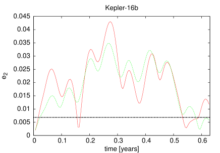
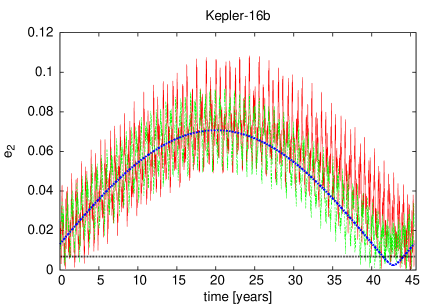
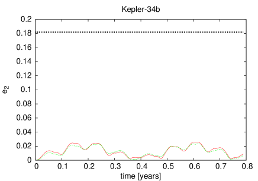
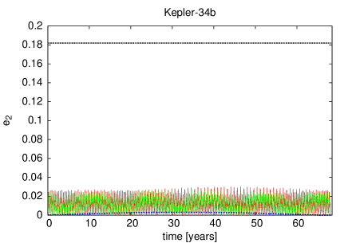
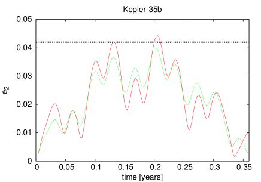
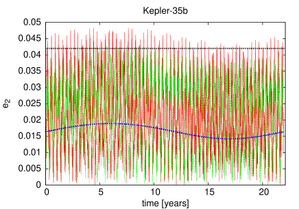
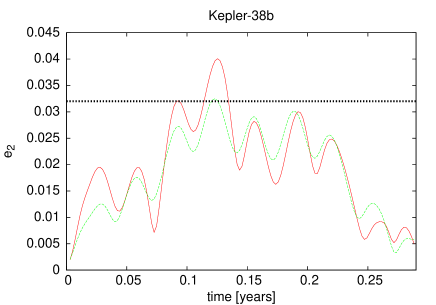
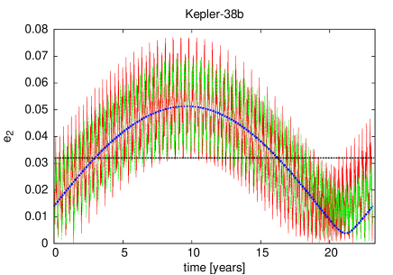
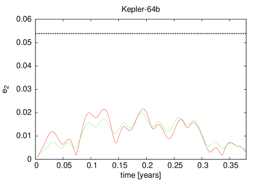
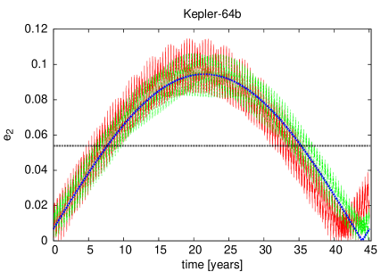
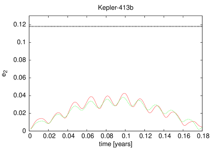
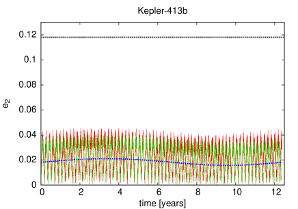
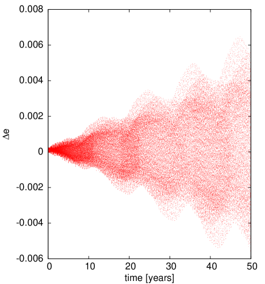
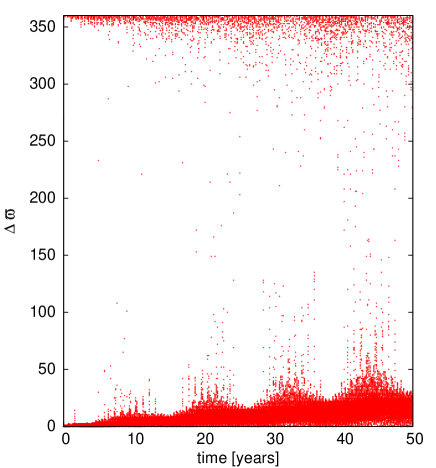
7 المناقشة
نود أن نشير هنا إلى أننا افترضنا أن أنظمة كبلر الستة مستوية. وفي الواقع، لها جميعا ميل مداري متبادل ما، حيث يملك Kepler-413 أكبر ميل بين هذه الأنظمة، أي . وللتحقق مما إذا كان وصفنا التحليلي لتطور النظام يبقى صالحا لمثل هذه الميول، أجرينا محاكاة ثنائية وثلاثية الأبعاد لنظام Kepler-413. ووجدنا أن الفرق بين النموذجين غير مهم بالنسبة إلى سعة متجه اختلاف المركز. لذلك تبقى تنبؤاتنا للقيم العظمى والمتوسطة لاختلاف المركز صالحة. غير أن خط طول الحضيض بدا متأثرا بدرجة ملحوظة. ومن ثم لا نوصي باستخدام الوصف التحليلي الكامل المعروض في القسم 5 لوصف تطور مدار نظام طويل الأمد عند ميول متبادلة تقارب أو تزيد عليها. ويعرض الشكل 9 المعلومات ذات الصلة.
8 الخلاصة
اشتققنا في هذا العمل تقديرات تحليلية لحركة الكواكب المستوية المحيطة بنجمين. وقد أجري الاشتقاق لمدارات دائرية ابتداء، وافترض أن اختلاف المركز الكوكبي يبقى منخفضا (). ووصفنا الحركة القصيرة الأمد بحل معادلات تفاضلية مشتقة من متجه رونغه-لنتس. وبالمثل، استخدمت نظرية الاضطراب القانوني لنمذجة الحركة العلمانية. إن العمل بالشذوذ اللامركزي بدلا من الشذوذ الحقيقي لوصف الحركة القصيرة الأمد للجسم المسبب للاضطراب يؤدي إلى حل لا يعتمد على توسع متسلسل بدلالة اختلاف مركز الثنائي. وهذه ميزة كبيرة، إذ لا نحتاج إلى القلق بشأن تقارب الحل وحجم اختلاف مركز الجسم المسبب للاضطراب. ومن ثم فإن اشتقاقاتنا صالحة لجميع اختلافات مركز الثنائي النجمي ما دام الكوكب بعيدا بما يكفي عن الثنائي بحيث يمكن اعتبار النظام ثلاثيا هرميا.
في القسم 5 قدمنا إطارا تحليليا كاملا لوصف حركة ثنائي نجمي وكوكبه المحيط به. واشتقت تعبيرات تحليلية لمتوسط مربع اختلاف المركز، وكذلك للقيمة العظمى لاختلاف مركز الكوكب. واختبرت التقديرات عدديا لكتل نجمية وكوكبية مختلفة وعلى مدى واسع من اختلافات المركز ونسب الفترات. وأظهرت النتائج توافقا جيدا جدا بين المحاكاة العددية والتقديرات التحليلية. وعلاوة على ذلك، إذا اقتضت الحاجة، يمكن تعديل الصيغ التحليلية بسهولة لإدراج بعض آثار النسبية العامة. وأخيرا طبقت التقديرات التحليلية على ستة أنظمة كبلر محيطة بنجمين بنتائج جيدة، إذ قدمت معلومات قيمة عن تطور تلك الأنظمة وربما عن تشكلها.
يمكن استخدام التقديرات التحليلية المستحصلة في هذا العمل، على سبيل المثال، في نظريات تشكل الكواكب التحليلية، أو في نمذجة العبور في الأنظمة الكوكبية المحيطة بنجمين، أو في تحديد المناطق القابلة للسكنى حول الثنائيات النجمية.
الملحق
تعرض التعبيرات الخاصة بـ و
و في المعادلات (31). وهي تحتوي الحدود القصيرة الدور
لمتجه اختلاف المركز الخارجي. وبالنسبة إلى لدينا و.
في المعادلات (31). وهي تحتوي الحدود القصيرة الدور
لمتجه اختلاف المركز الخارجي. وبالنسبة إلى لدينا و.
| (64) | |||||
| (65) | |||||
الترميز
| semimajor axis of the inner () and outer () orbit | |
| vacuum light speed | |
| integration constants | |
| eccentricity vectors | |
| x () and y () components of the inner and outer eccentricity vector | |
| eccentric anomalies | |
| true anomalies | |
| gravitational constant | |
| h | specific angular momentum of the outer orbit |
| Hamiltonians | |
| mutual inclination of the binary and planetary orbits | |
| parameters of the long term solution | |
| Delaunnay actions | |
| Delaunnay angles (mean anomaly, argument of pericenter) | |
| masses of the two stars | |
| mass of the planet | |
| total mass of the system | |
| mass parameters | |
| mean motions | |
| Legendre polynomials | |
| x and y component terms of short period solution | |
| barycentric position vectors of the stars () and the planet () | |
| r | Jacobi vector of the stellar orbit |
| R | Jacobi vector of the planetary orbit |
| angle between r and R | |
| time | |
| stellar and planetary longitude of pericentre | |
| pericentre rotation matrices | |
| period ratio between outer and inner orbit |
References
- Blaes et al. (2002) Blaes, O., Lee, M. H., & Socrates, A. 2002, ApJ, 578, 775
- Borkovits et al. (2007) Borkovits, T., Forgács-Dajka, E., & Regály, Z. 2007, A&A, 473, 191
- Brouwer (1959) Brouwer, D. 1959, AJ, 64, 378
- Chavez et al. (2015) Chavez, C. E., Georgakarakos, N., Prodan, S., et al. 2015, MNRAS, 446, 1283
- Chavez et al. (2012) Chavez, C. E., Tovmassian, G., Aguilar, L. A., Zharikov, S., & Henden, A. A. 2012, A&A, 538, A122
- Demidova & Shevchenko (2014) Demidova, T. V., & Shevchenko, I. I. 2014, ArXiv e-prints, arXiv:1407.5493
- Doyle et al. (2011) Doyle, L. R., Carter, J. A., Fabrycky, D. C., et al. 2011, Science, 333, 1602
- Eggl & Dvorak (2010) Eggl, S., & Dvorak, R. 2010, in Lecture Notes in Physics, Berlin Springer Verlag, Vol. 790, Lecture Notes in Physics, Berlin Springer Verlag, ed. J. Souchay & R. Dvorak, 431–480
- Eggl et al. (2013) Eggl, S., Pilat-Lohinger, E., Funk, B., Georgakarakos, N., & Haghighipour, N. 2013, MNRAS, 428, 3104
- Eggl et al. (2012) Eggl, S., Pilat-Lohinger, E., Georgakarakos, N., Gyergyovits, M., & Funk, B. 2012, ApJ, 752, 74
- Farago & Laskar (2010) Farago, F., & Laskar, J. 2010, MNRAS, 401, 1189
- Ford et al. (2000) Ford, E. B., Kozinsky, B., & Rasio, F. A. 2000, ApJ, 535, 385
- Georgakarakos (2002) Georgakarakos, N. 2002, MNRAS, 337, 559
- Georgakarakos (2003) —. 2003, MNRAS, 345, 340
- Georgakarakos (2004) —. 2004, Celestial Mechanics and Dynamical Astronomy, 89, 63
- Georgakarakos (2006) —. 2006, MNRAS, 366, 566
- Georgakarakos (2009) —. 2009, MNRAS, 392, 1253
- Harrington (1968) Harrington, R. S. 1968, AJ, 73, 190
- Heppenheimer (1978) Heppenheimer, T. A. 1978, A&A, 65, 421
- Holman & Wiegert (1999) Holman, M. J., & Wiegert, P. A. 1999, AJ, 117, 621
- Kaula (1962) Kaula, W. M. 1962, AJ, 67, 300
- Kiseleva et al. (1998) Kiseleva, L. G., Eggleton, P. P., & Mikkola, S. 1998, MNRAS, 300, 292
- Kley & Haghighipour (2014) Kley, W., & Haghighipour, N. 2014, A&A, 564, A72
- Kostov et al. (2014) Kostov, V. B., McCullough, P. R., Carter, J. A., et al. 2014, ApJ, 784, 14
- Kozai (1962) Kozai, Y. 1962, AJ, 67, 591
- Krymolowski & Mazeh (1999) Krymolowski, Y., & Mazeh, T. 1999, MNRAS, 304, 720
- Lee & Peale (2003) Lee, M. H., & Peale, S. J. 2003, ApJ, 592, 1201
- Leung & Lee (2013) Leung, G. C. K., & Lee, M. H. 2013, ApJ, 763, 107
- Li et al. (2014) Li, G., Naoz, S., Holman, M., & Loeb, A. 2014, ApJ, 791, 86
- Lidov (1962) Lidov, M. L. 1962, Planet. Space Sci., 9, 719
- Lines et al. (2014) Lines, S., Leinhardt, Z. M., Paardekooper, S., Baruteau, C., & Thebault, P. 2014, ApJ, 782, L11
- Liu et al. (2015) Liu, B., Muñoz, D. J., & Lai, D. 2015, MNRAS, 447, 747
- Liu et al. (2012) Liu, X., Baoyin, H., Georgakarakos, N., Donnison, J. R., & Ma, X. 2012, MNRAS, 427, 1034
- Marchal (1990) Marchal, C. 1990, The three-body problem
- Mazeh & Shaham (1979) Mazeh, T., & Shaham, J. 1979, A&A, 77, 145
- Mikkola (1997) Mikkola, S. 1997, Celestial Mechanics and Dynamical Astronomy, 67, 145
- Moriwaki & Nakagawa (2004) Moriwaki, K., & Nakagawa, Y. 2004, ApJ, 609, 1065
- Murray & Dermott (1999) Murray, C. D., & Dermott, S. F. 1999, Solar system dynamics
- Naoz et al. (2013a) Naoz, S., Farr, W. M., Lithwick, Y., Rasio, F. A., & Teyssandier, J. 2013a, MNRAS, 431, 2155
- Naoz et al. (2013b) Naoz, S., Kocsis, B., Loeb, A., & Yunes, N. 2013b, ApJ, 773, 187
- Orosz et al. (2012) Orosz, J. A., Welsh, W. F., Carter, J. A., et al. 2012, ApJ, 758, 87
- Pelupessy & Portegies Zwart (2013) Pelupessy, F. I., & Portegies Zwart, S. 2013, MNRAS, 429, 895
- Schwamb et al. (2013) Schwamb, M. E., Orosz, J. A., Carter, J. A., et al. 2013, ApJ, 768, 127
- Teyssandier et al. (2013) Teyssandier, J., Naoz, S., Lizarraga, I., & Rasio, F. A. 2013, ApJ, 779, 166
- Welsh et al. (2012) Welsh, W. F., Orosz, J. A., Carter, J. A., et al. 2012, Nature, 481, 475